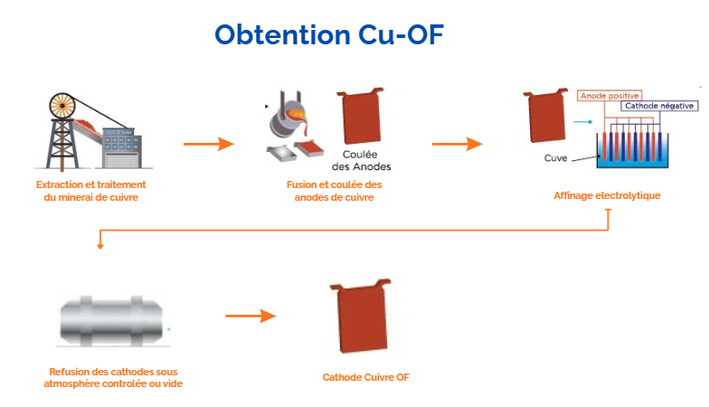

Composition chimique
Éléments (% masse)
| Éléments | Min (%) | Max (%) |
|---|---|---|
| Cu* | 99,95 | — |
| O | — | 0,0010 |
* Observations :
1) L'oxygène et les éléments traces peuvent varier selon le procédé.
2) Ce cuivre est un cuivre haute conductivité qui possède, à l'état recuit, une conductivité minimale de 100% IACS.
3) La valeur Cu inclut Ag.
1) L'oxygène et les éléments traces peuvent varier selon le procédé.
2) Ce cuivre est un cuivre haute conductivité qui possède, à l'état recuit, une conductivité minimale de 100% IACS.
3) La valeur Cu inclut Ag.
Propriétés du Cu-OF
Propriétés physiques
| Point de fusion | 1083 °C |
| Densité | 8,96 g/cm³ |
| Conductivité Electrique | 102 % IACS* (≡ 59 MS/m) |
| Conductivité Thermique | 394 W/m·K |
| Module de rigidité | 120 GPa |
| Structure Cristalline | CFC |
* IACS (International Annealed Copper Standard)
Propriétés de fabrication
| Soudage | Approprié |
| Brasage | Excellent |
| Déformation à froid | Excellent |
| Déformation à chaud | Excellent |
| Sensibilité aux Atmospheres Reductrices | Insensible |
Traitements thermiques
| Traitement | Température (°C) | Temps (min) | Atmosphère | Refroidissement |
|---|---|---|---|---|
| Recuit | 375 - 650 | 15 - 60 | Air ou Argon ou N2 + H2 | Non critique |
| Travail à chaud | 760 - 870 | - | Air ou Argon ou N2 + H2 | Non critique |
La déformation à froid ou à chaud (750 à 875°C) ne pose pas de difficulté. Les aptitudes à l'étampage et à l'emboutissage sont également excellentes.
Le recuit peut s'effectuer à l'air, auquel cas un décapage ultérieur sera nécessaire pour enlever la couche d'oxyde. Le recuit peut également s'effectuer sous atmosphère neutre (argon) ou réductrice (N2 + H2).
Les meilleures microstructures et propriétés mécaniques sont obtenues avec des températures de recuit dans le bas de l'intervalle donné ci dessus.
Le recuit peut s'effectuer à l'air, auquel cas un décapage ultérieur sera nécessaire pour enlever la couche d'oxyde. Le recuit peut également s'effectuer sous atmosphère neutre (argon) ou réductrice (N2 + H2).
Les meilleures microstructures et propriétés mécaniques sont obtenues avec des températures de recuit dans le bas de l'intervalle donné ci dessus.
PROPRIÉTÉS MÉCANIQUES
Valeurs typiques pour le cuivre recuit à température ambiante
| Forme | Trempe | Code | Résistance mécanique (Rm) (MPa) | YS 0,5% (MPa) | Allongement (%) | Dureté HRB | Déf. à froid (%) |
|---|---|---|---|---|---|---|---|
| Fil machine (Rod wire) | As Hot Rolled | M20 | 221 | — | 55 | — | — |
| Hard | H04 | 331 | 303 | 16 | 47 | 35 | |
| Hard | H04 | 310 | 276 | 20 | 45 | 16 | |
| Hard | H04 | 379 | 345 | 10 | 60 | 40 | |
| Nominal grain size 0,050mm | OS050 | 221 | 69 | 55 | — | — | |
| Fil (Wire) | Hard | H04 | 379 | — | 1,5 | — | — |
| Nominal grain size 0,050mm | OS050 | 241 | — | 35 | — | — | |
| Spring | H08 | 455 | — | 1,5 | — | — |
Procédés d'obtention du Cu-OF

Schéma : Obtention du Cu-OF — de l'extraction à la refusion sous atmosphère contrôlée
1
Extraction
Extraction et traitement du minerai de cuivre. Concassage, broyage, flottation → concentré Cu
→
2
Fusion & Coulée des anodes
Fusion du cuivre dans le four réverbère et coulée des anodes
→
3
Affinage électrolytique
Réactions chimiques d'oxidation et reduction qui permettent la purification du cuivre.
→
4
Cathode Cu-OF
Obtention de cathodes ≥99,95% Cu par affinage électrolytique
→
5
Refusion sous atmosphère
Refusion des cathodes sous vide ou gaz inerte → élimination totale de l'oxygène résiduel